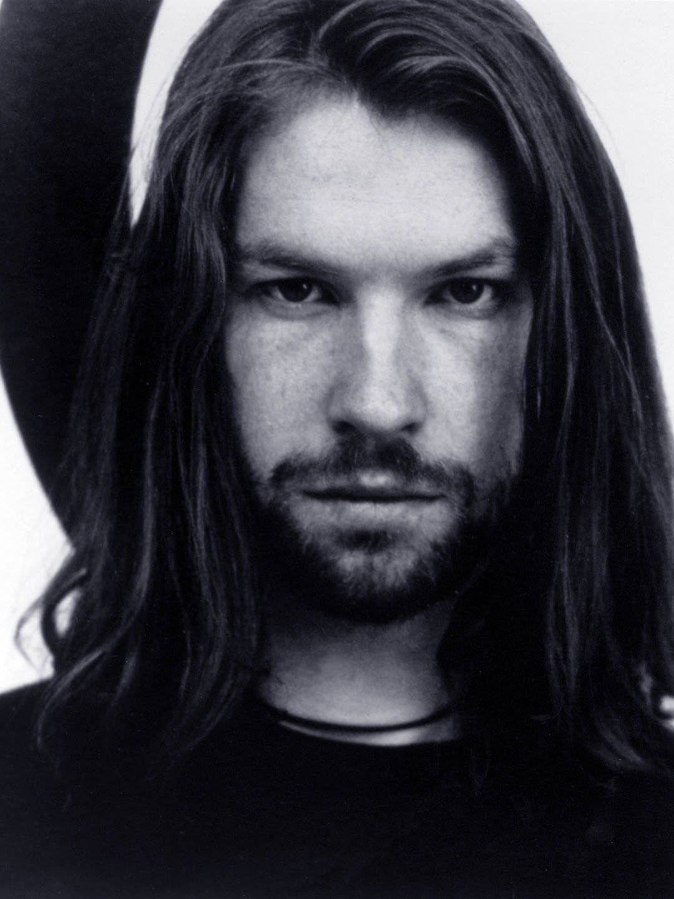

Так как обхватить все жанры электронной музыки невероятно тяжело, мы рассмотрим лишь малую часть в качестве демонстрации
- Intelligent dance music (с англ.«умная танцевальная музыка», «интеллигентная танцевальная музыка») или сокращённо IDM — условное обозначение для некоторых стилей электронной и танцевальной музыки, которые не вписываются в традиционные рамки принятых обозначений. Фигурирующее в названии жанра сочетание «dance music» говорит о возможном использовании принципов музыкального построения и композиционной техники, применяемых при создании танцевальной музыки. Акцент же на слове «intelligent» указывает на то, что данный тип музыки обладает некими характеристиками, отличными от характеристик «обычной музыки». Такими характеристиками могут быть степень композиционной сложности, использование нетривиальных идей и ходов, использование необычных звуковых тембров, особое эмоциональное и информационное наполнение.
Одним из самых известных исполнителей является Aphex twin

- Электронная танцевальная музыка (англ. EDM — Electronic dance music) представляет собой широкий спектр жанров и стилей электронной музыки, направленных, в первую очередь для развлекательной индустрии. EDM является основой музыкального сопровождения для ночных клубов и фестивалей электронной музыки. EDM, как правило, используется в контексте живого воспроизведения, где диджей проигрывает заранее подготовленный список произведений, плавно переходя от одного к другому. Электронная танцевальная музыка не относится к отдельному стилю в музыке, а используется в качестве обобщенного термина для нескольких популярных жанров, таких как хаус, транс, техно, дабстеп, драм-н-бейс и множества других. Это основной результат творчества большинства современных музыкальных продюсеров и диджеев.
- Драм-н-бейс или драм-энд-бейс (англ. drum and bass)— жанр электронной музыки, который возник из рейва и олдскул-джангла в Англии в начале 1990-х годов.
Изначально драм-н-бейс возник как ответвление британской сцены брейкбита, джангла и рейва, когда музыканты стали смешивать бас из рагга с ускоренным брейкбитом из хип-хопа. Некоторые считают, что существенного различия между терминами «драм-н-бейс» и «джангл» нет. Некоторые называют джанглом старые записи первой половины 90-х годов, а драм-н-бейсом считают существенно эволюционировавший джангл с новыми посттекстепными элементами. Другие для краткости используют термин «джангл» для обозначения рагга-джангла — характерного поджанра джангл-музыки.